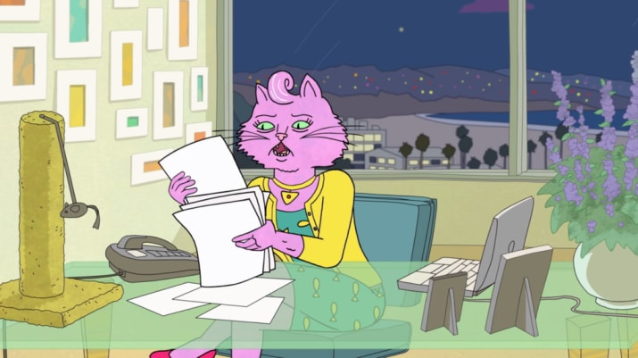

Princess Carolyn is a pink Persian cat who is BoJack's agent in the first three seasons and former on-and-off girlfriend.
She was atop agent at Vigor agency through her dogged pursuit of new talent and large network of odd personal connections.
Though she struggles to find a balance between work, her troubled personal life, and taking care of BoJack and her friends,
she enjoys her fast-paced hectic lifestyle.After leaving Vigor to start a new agency with her then-boyfriend and coworker
Rutabaga Rabitowitz. After several setbacks, Princess Carolyn closes VIM in Season 3, only to reopen it as a management agency.

| Age | Born | Species | Sex | Occupation |
|---|---|---|---|---|
| 43 | 1974 | Persian Cat | Female |
|
About Page Gallery Mr. Peanutbutter Princess Carolyn Diane Nguyen